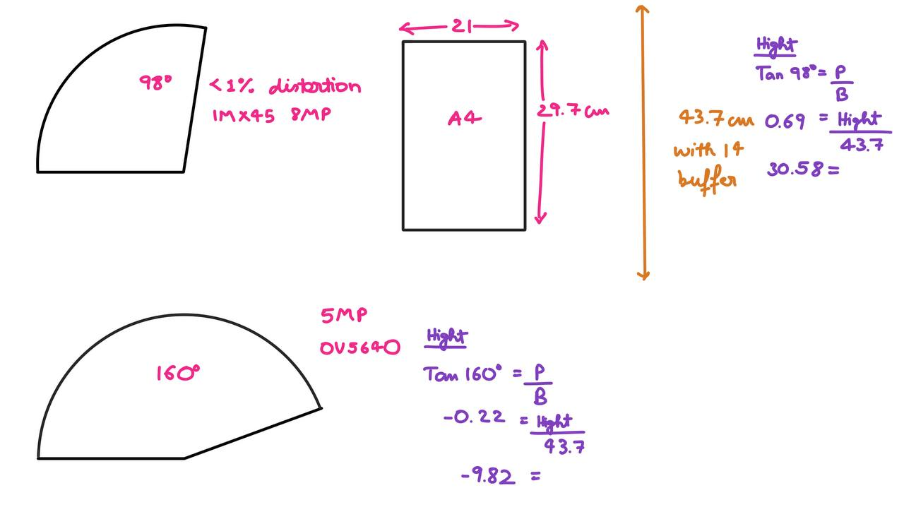

Portable Prescription Digitizer
Requirements:
- Micro controller -
- High speed
- Low Power consumption
- Camera -
- Wide angle to reduce hight
- Hight image quality for image processing
- Size and portability -
- Small in size
- Light weight
- Data Transmission -
- Wireless
- High speed
- Low power consumption
Camera Module Selection
The camera need to wide angle enough to peed the paper / prescription in the view.
The prescription is A4 size at max i.e. the hight of 29.7 cm. Adding 7 cm buffer for hand movement and adjustment the total hight required would be 43.7 cm.
- IMX415 (8MP)
- Resolution: 3840×2160
- FOV: 98° with <1% distortion
- Interface: 4-Lane MIPI CSI-2
- Applications: Facial recognition, surveillance, license plate recognition
- OV5640 (5MP)
- Resolution: 2592×1944
- Wide-angle options: 160-degree fisheye available
- Advantages: Better image quality than OV2640
Selected OV5640 because of it wider view.